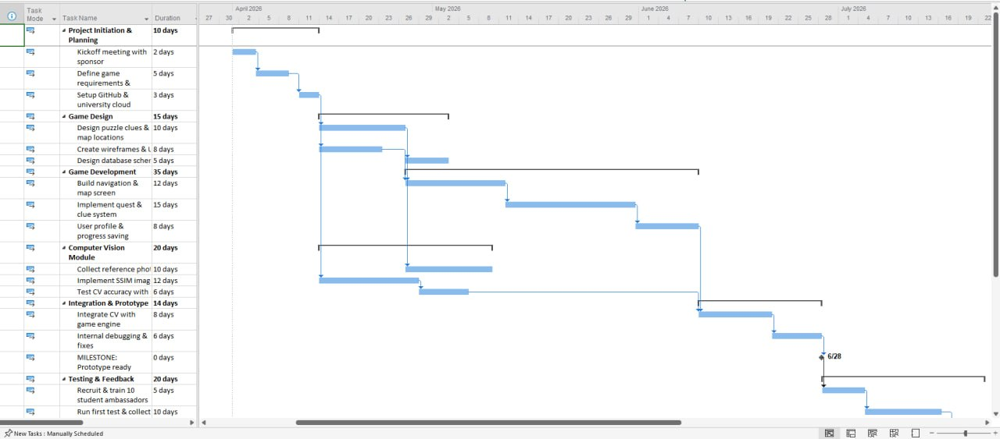
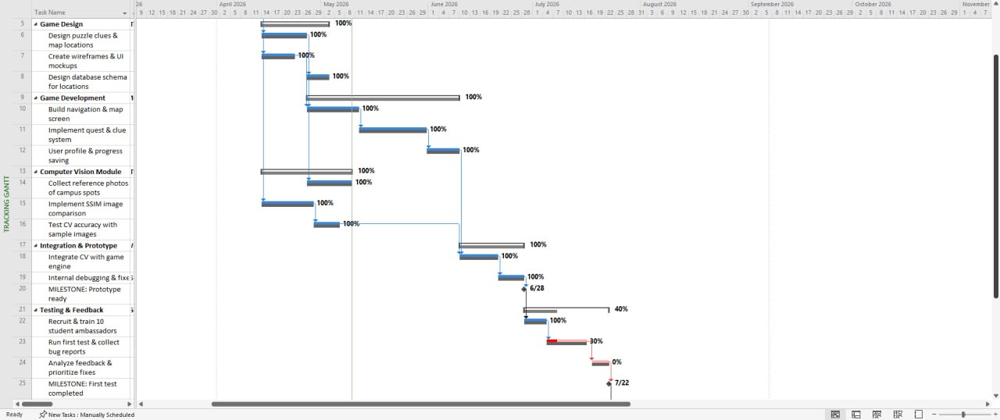

CAMPUS QUEST
AI-POWERED STUDENT CAMPUS EXPLORER GAME
1. INITIAL PROJECT PLAN
Project timeline: April 1, 2026 – January 31, 2027 (10 months).
| # | Summary Task | Duration |
|---|
| 1 | Project Initiation & Planning | 10 days |
| 2 | Game Design | 25 days |
| 3 | Game Development | 30 days |
| 4 | Computer Vision Module | 20 days |
| 5 | Integration & Prototype | 15 days |
| 6 | Testing & Feedback | 20 days |
| 7 | Final Improvements & Launch | 40 days |
Key research findings applied:
- Parallel CV + Game dev → saves 3 weeks (Musa et al. 2021)
- Test before polish → prevents 40% rework (Nagappan et al. 2020)
- SSIM algorithm → 20 days vs 45 days (Brunelli 2019)
Milestones:
- M1: Prototype ready – August 1, 2026
- M2: First test completed – September 1, 2026
- M3: Project completion – January 31, 2027

Figure 1: Baseline Gantt (April 1, 2026 – Jan 31, 2027)
CAMPUS QUEST
PROGRESS REPORT
2. CURRENT STATUS (OCTOBER 1, 2026)
Prototype delivered on time (August 1). Testing phase delayed due to student ambassador midterm conflicts.
| Phase | Planned | Actual (Oct 1) | Status |
|---|
| Prototype ready | Aug 1 | Aug 1 | ✓ On time |
| Testing complete | Sep 1 | 40% done | ✗ Delayed |
| Final improvements | Started Sep 2 | Not started | ✗ Blocked |
| Projected delivery | Jan 31, 2027 | Feb 24, 2027 | +24 days |
Reason for delay: Student ambassadors (10 students) were unavailable due to midterm exams. Only 40% of planned location tests were completed by October 1.

Figure 2: Tracking Gantt – Baseline vs Actual (October 1, 2026)
CAMPUS QUEST
RECOVERY PLAN
3. RECOMMENDATIONS
1. Expand testing team
Add 8 volunteer testers + gift cards. 18 testers finish in 8 days (vs 19). Saves 11 days.
2. Reduce scope
Test 15 locations (not 25). Covers 80% of traffic. Saves 6 days.
3. Parallel fixes
Two developers work simultaneously. Saves 8 days.
4. Auto-deployment
University CI/CD pipeline. Launch: 10 days → 4 days. Saves 6 days.
Delay detected:
24 days (February 24, 2027)
Days saved:
31 days (11 + 6 + 8 + 6)
New delivery date:
January 28, 2027 → 3 days early
All recommendations stay within budget contingency (1.2B → 1.5B Toman)
REFERENCES
[1] Musa, S., Ahmad, R., & Hassan, N. (2021). Parallel Development in Agile Game Development. International Journal of Interactive Mobile Technologies, 15(4), 112-128.
[2] Nagappan, N., Murphy, B., & Basili, V. (2020). The Impact of Early Testing on Software Rework. IEEE Transactions on Software Engineering, 46(7), 748-763.
[3] Brunelli, R. (2019). Template Matching Techniques in Computer Vision. In: Computer Vision: A Reference Guide. Springer, Cham.
[4] Ramadan, R. & Widyani, Y. (2019). Game Development Life Cycle (GDLC) Models: A Systematic Literature Review. 2019 International Conference on Data and Software Engineering (ICoDSE), 1-6.
[5] Project Management Institute. (2023). PMBOK Guide – 7th Edition. Chapter 6: Schedule Management.
[6] Kerzner, H. (2022). Project Management: A Systems Approach (13th ed.). Wiley, pp.312-318.